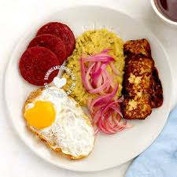

Mangú
Home

Description
Mangú with Los Tres Golpes is a classic Dominican breakfast
made with mashed green plantains.
It is usually served with fried salami, fried cheese, eggs, and pickled red onions.
Ingredients
- Green plantains
- Water
- Salt
- Butter or oil
- Dominican salami
- Frying cheese
- Eggs
- Red onions
- Vinegar
- Oil for frying
Steps
- Peel the green plantains and cut them into pieces.
- Boil the plantains in salted water until they are soft.
- Mash the plantains with butter or oil, adding a little cooking water until smooth.
- Slice the red onion and cook it with vinegar, salt, and a little oil.
- Fry the Dominican salami until golden.
- Fry the cheese until both sides are golden.
- Fry the eggs to your liking.
- Serve the mangú with the salami, cheese, eggs, and onions on top or on the side.